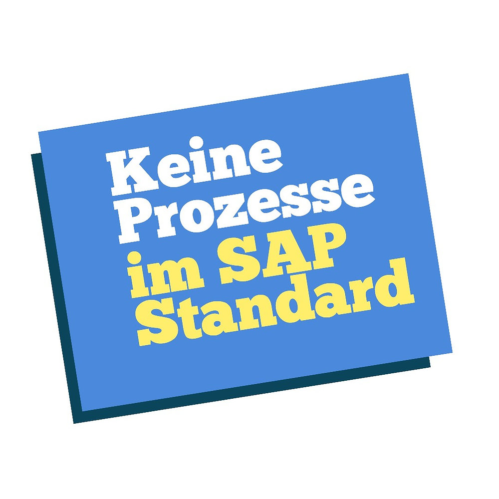
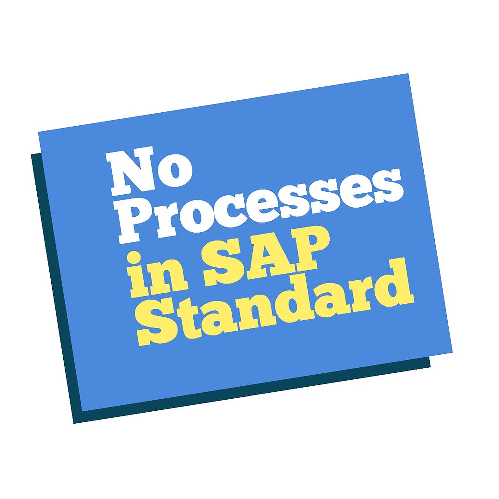
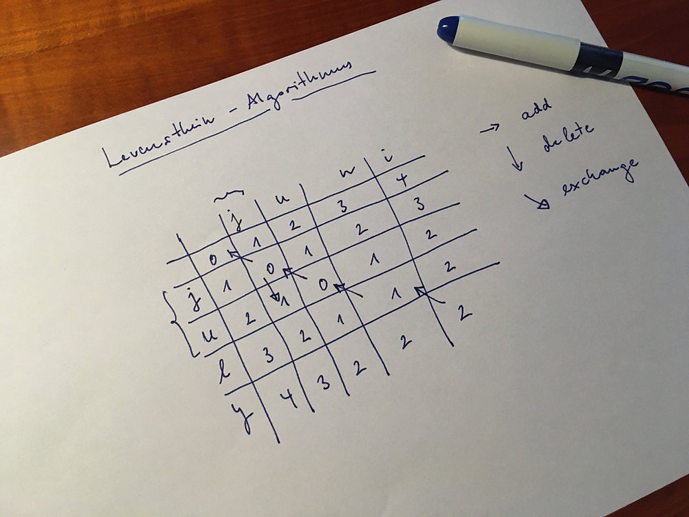
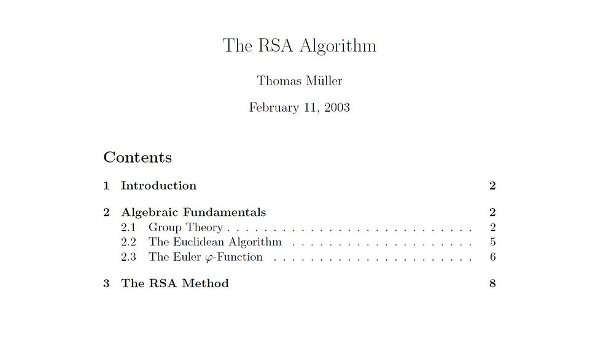

SAP-ProzesseDer SAP-Standard liefert keine Prozesse
Warum SAP-Belege noch keine geführten Geschäftsprozesse ergeben und welche Architektur ein Prozesswerkzeug braucht.
21. Nov. 2018Archiv
Ausgewählte ältere Beiträge bleiben hier unter ihren alten URLs erreichbar.

SAP-ProzesseWarum SAP-Belege noch keine geführten Geschäftsprozesse ergeben und welche Architektur ein Prozesswerkzeug braucht.
21. Nov. 2018
SAP processesWhy SAP documents are not the same as managed business processes and what a process tool needs to provide.
5. Aug. 2019
ABAP Search EngineEin technischer Artikel über Volltextsuche, OCR-Fehler, Levenshtein-Distanz und Suchstrukturen in ABAP.
29. Jan. 2020
CryptographyA short archived note about an ExeQwork PDF explaining the elementary algebra behind RSA encryption.
28. Feb. 2020 Modellierung
Modellierung
Ein kurzer archivierter Hinweis auf ein Python-Programm zum Experimentieren mit einem SIR-Epidemiemodell.
25. März 2020